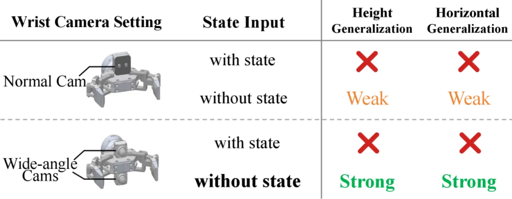
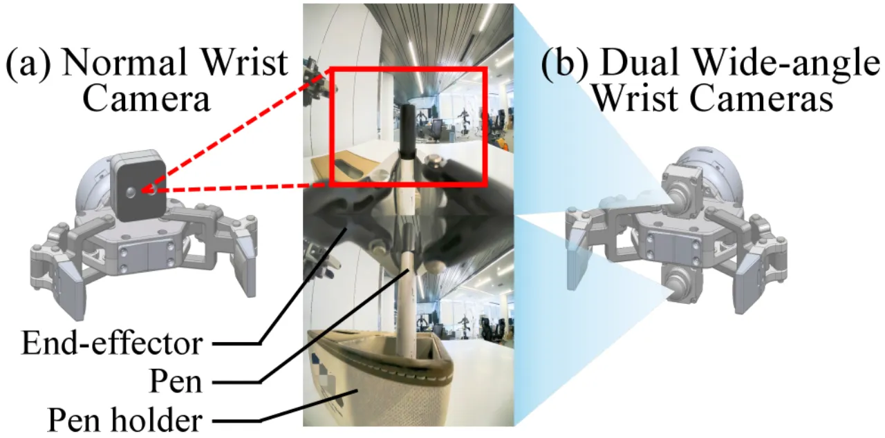
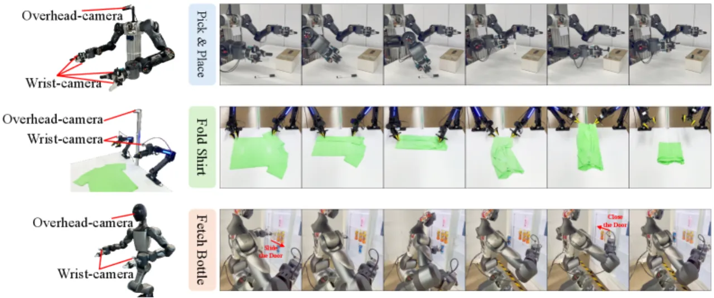
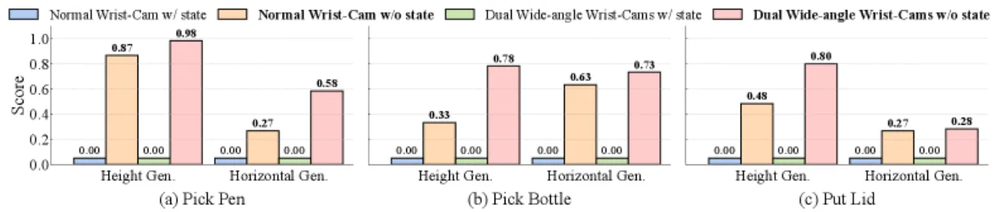
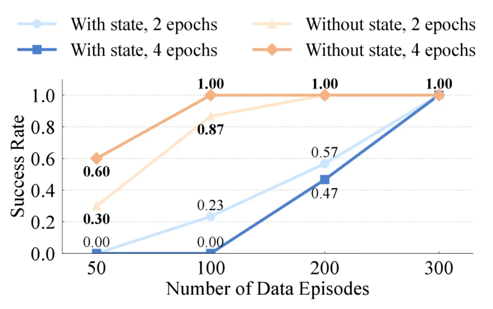

本体感知（关节角度、末端位姿等状态输入）是机器人视觉运动策略的默认输入，但作者发现它实际上是泛化的"绊脚石"——策略会以状态为"捷径"记忆训练轨迹，而非学会真正的视觉推理。去掉状态输入、改用相对末端执行器动作空间与双广角腕部相机，即可在多机器人平台上大幅提升空间泛化，同时保持域内性能不变。
本体感知状态（关节角度、末端执行器绝对位姿等）长期以来被视为视觉运动策略的必要输入——但它真的有帮助吗？作者通过系统实验发现，状态输入反而会让策略"走捷径"：在固定高度、固定位置训练后，只要物体位置稍有变动，成功率就从98%骤降至0%。
"State inputs may act as shortcuts that enable policies to memorize training trajectories tied to specific states, rather than developing true visual reasoning for task completion."

传统的 state-based 策略在域内（in-domain）表现良好，但当桌子高度变化±10cm 或物体水平偏移5~10cm 时，性能急剧下降。这种脆弱性在真实部署中代价极高。作者验证了该现象在三种不同机器人平台（双臂类人机器人、Arx5 系统、26自由度全身机器人）上均普遍存在。
State-free Policy 由三个核心设计组成：去除所有状态输入、采用相对末端执行器动作空间、以及使用双广角腕部相机提供充分的视觉覆盖。三者协同，使策略的决策完全依赖于视觉观测，从而具备内在的位姿无关性。

策略预测相对位移 Δpt = [Δxt, Δqt]，而非绝对位姿。由于相机固定在末端执行器上，相同的视觉观测对应相同的相对位移，无论机器人的绝对姿态如何——这是空间泛化的核心机制。与之对比，绝对动作空间下策略必须感知自身绝对位置（即需要状态输入），而关节角度空间则因逆运动学高度非线性而难以泛化。
在末端执行器顶部和底部各安装一个120°×120° 广角相机。单个普通腕部相机在抓取不同高度物体时，目标很容易滑出视野；双广角方案保证了在所有操作阶段任务相关区域均在视场内。实验还发现，移除俯视（overhead）相机反而提升了性能——俯视视角在机器人姿态变化时会引入分布偏移，拖累泛化。

State-free 设计并非针对某一特定策略架构，而是一种通用的输入/动作空间改造方案。实验验证了其在 π₀、ACT、Diffusion Policy 三种架构上均一致有效，其中 π₀ 表现最优。
在三种真实机器人平台和 LIBERO 仿真基准上进行验证，涵盖高度泛化（±10cm）、水平泛化（5~10cm偏移）、域内性能、数据效率和跨实体迁移五个维度。使用 π₀ 作为主要策略架构，对比 state-based 变体（相同视觉输入+本体感知状态）。
| 任务 | 泛化类型 | State-based | State-free (本文) | 提升 |
|---|---|---|---|---|
| Pick Pen | 高度泛化 | 0% | 98.4% | +98.4pp |
| Pick Pen | 水平泛化 | 6% | 58.4% | +52.4pp |
| Fold Shirt | 水平泛化 | 18.3% | 83.4% | +65.1pp |
| Fetch Bottle（全身） | 水平泛化 | 11.7% | 78.4% | +66.7pp |
| LIBERO（仿真均值） | 域内 | 93.8% | 94.5% | +0.7pp |

Table III 对比四种动作表示：
| 动作空间 | 高度泛化 | 水平泛化 |
|---|---|---|
| Relative EEF（本文） | 98.4% | 58.4% |
| Absolute EEF | 0% | 0% |
| Relative Joint-angle | 0% | 0% |
| Absolute Joint-angle | 0% | 0% |
结果清晰表明：相对末端执行器动作空间是泛化的必要条件，其他三种表示方式均完全失效。
Table IV 对比五种相机方案（Pick Pen 任务）：
| 相机配置 | 高度泛化 | 水平泛化 |
|---|---|---|
| 仅 Overhead | 21.7% | 13.3% |
| 单个普通腕部 | 86.7% | 26.7% |
| 双普通腕部 | 92.0% | 40.0% |
| 双广角腕部（本文） | 98.3% | 58.3% |

论文明确指出："Vision-only policies might exhibit sensitivity to the background: changing the background (e.g., relocating the robot and table) may require additional fine-tuning to restore performance." 纯视觉策略对环境外观变化较为敏感，实际部署时若更换场地、光照或背景，需要额外采集数据并微调。
作者观察到：在双臂操作中，当一侧手臂静止时，另一侧手臂的视觉移动有时会触发非预期的运动。这是宽视场腕部相机会捕捉到对侧手臂运动的副作用，目前尚无系统性解决方案。
Relative EEF 动作空间要求机器人支持末端执行器笛卡尔控制接口；对于仅支持关节级控制、或动力学特性复杂（如柔性/软体机器人）的平台，该方法的适用性有待验证。此为从设计推断，论文未显式讨论。